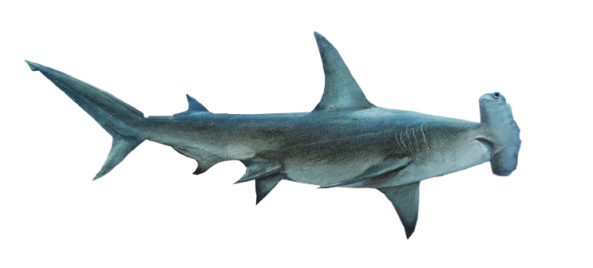

HAMMER
The hammerhead sharks are a group of sharks that form the family Sphyrnidae, so named for the unusual and distinctive structure of their heads, which are flattened and laterally extended into a "hammer" shape called a cephalofoil.